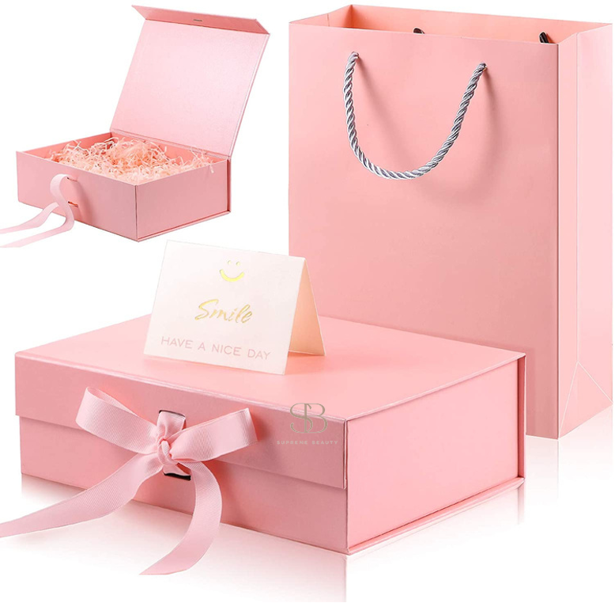

Beauty Beyond the Store
Create a place people want to come back to.
Supreme Beauty brings the brand to life beyond the website through events, sampling, education, and community.

Events
Community hair showcases, beauty education, product discovery, stylist showcases, professional networking, sampling, giveaways, and pop-ups.
Supreme Samples
Sample boxes, giveaways, and product testing built around Discover → Try → Review → Shop.
Retail
Physical locations designed for discovery, with products that are easy to find.
Be First to Know